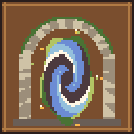

Hearthmoor
a cozy HD-2D village, and the toolset that builds it

HearthmoorThe game: three areas, a mossy portal, three cozy errands, a quest log, save and load. Touch, keyboard or controller.
Play
Hearthmoor PlazaTool demo: a village square with terraces, lamps and a day / dusk / night cycle.
Open
Bakery Lane at DuskTool demo: a bakery lane with rain, particles and pixel spell effects (F to cast).
Open